00이 매뉴얼에 대하여
일조권·사선제한 계산기는 건축물의 정북 방향 이격거리(일조 사선제한), 공동주택의 채광 높이와 같은 대지 동 간 거리를 건축법 제61조 · 시행령 제86조로 판정하고(정북 이격은 적용 기준일에 따라 현행 · 개정 기준 자동 선택), 대지 위도 · 기준일로 경계선을 넘는 그림자 시간을 참고로 계산해 A4 검토 계산서까지 만듭니다. 근거는 건축법 제61조(2026. 2. 27. 시행 · 제1항 개정 법률 제21880호 2026. 11. 12. 시행) · 건축법 시행령 제86조(2026. 10. 6. 시행본 · 제86조 최종 개정 2024. 6. 18.)입니다.
| 항목 | 내용 |
|---|---|
| 대상 프로그램 | 일조권·사선제한 계산기 MANMIN Ver-5.1(v5.1.0) — 탭 막대 「📘 매뉴얼」 버튼으로 이 문서가 열립니다 |
| 접속 주소 | manminkim-eng.github.io/Architectural-line |
| 매뉴얼 판 | Ver-5.1 (화면 표기와 같은 판 번호) · 2026-10-30 · 작성 김만민 건축사(㈜대성건축사사무소) |
| 내려받기 | PDF(A4) · 일조권·사선제한 계산기 열기 |
| 예제 | 본문 그림은 적용 기준일 2026. 10. 30.(현행 기준)의 예제 A(제2종 일반주거지역 다세대주택 · 높이 13.5 m · 정북 경계 5 m · 사이 도로 4 m)로 캡처했습니다 — 최소 이격 6.75 m · 계획 이격 7 m(⑥ 중심선) · 채광 한도 16 m · 동 간 6.75 m 이상 → 적합. 위반 예제 B · C와 개정 기준 예제 D는 부록 A2 · 4-9 |
| 근거 법령 | 건축법 제61조(2026. 2. 27. 시행 · 제1항 개정 법률 제21880호 2026. 11. 12. 시행) · 건축법 시행령 제86조(2026. 10. 6. 시행본 · 제86조 최종 개정 2024. 6. 18.) — LawMCP 원문 대조(2026-10-30) · 이행강제금 건축법 제80조 · 분쟁조정 건축법 제88조 |
| 읽는 순서 | 처음이면 1장 → 2장(따라하기) → 필요할 때 3장(화면별 상세). 허가 도서에 반영하기 전에는 4장(법령) · 5장(작업 방법) |
01한눈에 보기
설치 없이 브라우저에서 바로 실행되는 단일 페이지 앱(PWA)입니다. 입력한 내용은 브라우저 안에서만 계산되며 서버로 전송되지 않습니다.
무엇을 판정하나
정북 사선 최소 이격(§86①) · 공동주택 채광 높이(§86③1호) · 같은 대지 동 간 거리(§86③2호 가목) — 종합 적합/위반
무엇을 반영하나
적용 제외 특례 3종(§86②) · 사이 시설·부지의 반대편 경계선(§86⑥) · 용도지역별 채광 배수(2배 · 4배 · 제외)
참고 계산
위도 · 기준일(동지 · 하지 · 춘추분)별 태양 고도 · 방위각, 경계선을 넘는 그림자 시간 · 연속 일조 시간
1-1. 화면 구성
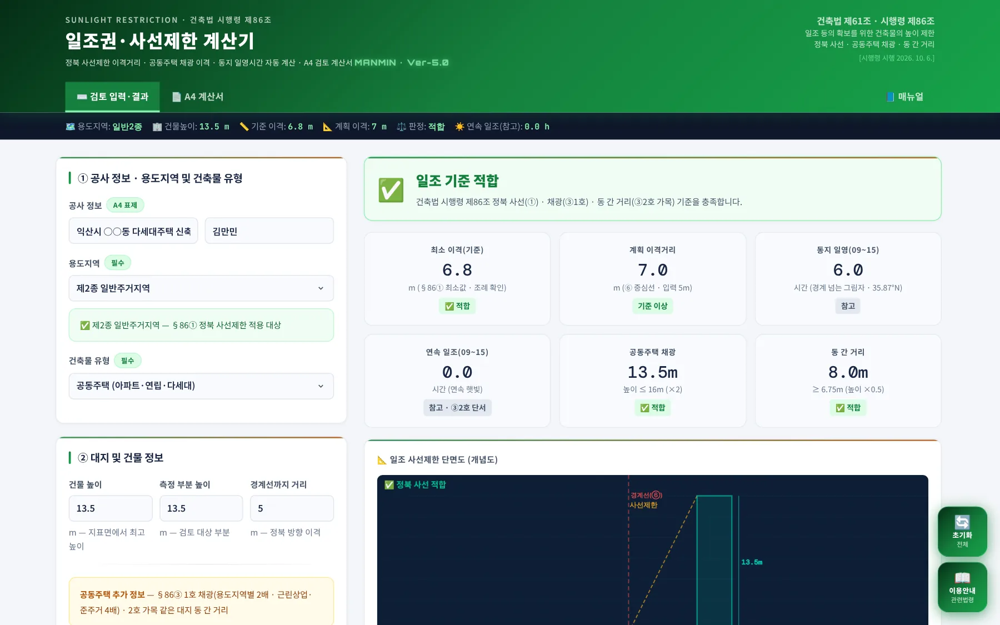
1234567- 1작업 탭: 검토 입력·결과 · A4 계산서 · 매뉴얼
- 2요약 스트립: 용도지역 · 건물 높이 · 기준 이격 · 계획 이격 · 판정 · 연속 일조(참고)
- 3① 공사 정보 · 용도지역 및 건축물 유형
- 4② 대지 및 건물 정보
- 5종합 판정
- 6검토 지표 6종
- 7오른쪽 아래 「초기화」 · 「이용안내」
| 영역 | 내용 |
|---|---|
| 왼쪽 — 입력 | ① 공사 정보 · 적용 기준일 · 용도지역 · 건축물 유형 → ② 높이 · 경계 거리 · 공동주택 정보 · 사이 시설 · 특례 → ③ 위도 · 기준일 · 방위각 → 「일조권 검토 실행」 → 용어 해설 3종 |
| 오른쪽 — 결과 | 종합 판정 → 검토 지표 6종 → 단면도(개념도) → 시간대별 일영 분석 표 → 일조 시간 분석 · 법령 근거 |
1-2. 작업 탭·근거 표시
- 1검토 입력·결과
- 2A4 계산서 — 인쇄 · PDF · JPG
- 3매뉴얼(이 문서)
- 4근거: 건축법 제61조 · 시행령 제86조 [법 §61① 개정 2026. 11. 12. · 영 2026. 10. 6.]
1-3. 설치·보관·매뉴얼
| 항목 | 내용 |
|---|---|
| 설치 | 주소창의 설치 아이콘 또는 휴대전화 「홈 화면에 추가」로 앱처럼 쓸 수 있습니다. 한 번 연 뒤에는 인터넷 없이도 계산됩니다 |
| 결과 보관 | 검토 결과는 A4 계산서(PDF · JPG)로 남기십시오. 화면을 닫으면 입력값은 남지 않습니다 |
| 매뉴얼 | 탭 막대 오른쪽 끝 「📘 매뉴얼」 — 인터넷 연결 시 새 창으로 열립니다. 좁은 화면에서는 탭 막대를 좌우로 밀면 보입니다 |
| 업데이트 | 새 버전이 올라오면 다음 접속 때 자동으로 바뀝니다. 화면이 예전 그대로면 새로 고침(Ctrl+F5) |
021분 따라하기
예제 A로 6단계를 따라 하면 최소 이격 6.75 m · 계획 이격 7 m · 채광 · 동 간 거리 모두 적합이 나옵니다.
- ① 기준일 · 용도지역 · 유형공사명 · 작성자를 넣고, 적용 기준일(건축허가 · 심의 신청일 또는 건축신고일)을 확인합니다 — 예제는 2026. 10. 30.(현행 기준). 용도지역 「제2종 일반주거지역」, 건축물 유형 「공동주택」을 고릅니다. 정북 사선 적용 대상이라는 안내가 나옵니다(3-1).
- ② 높이 · 거리건물 높이 13.5, 측정 부분 높이 13.5, 정북 경계선까지 거리 5. 사이 시설 · 부지 너비 4, 종류 「도로 · 광장 · 공공공지 · 녹지」. 특례 3종은 끕니다(3-2 · 4-4).
- ③ 공동주택 정보채광창 이격거리 8, 마주보는 동 간격 8, 주택 유형 「일반 공동주택」(3-2).
- ④ 검토 실행 · 판정대지 위도 「전라북도 익산 · 전주(35.87°N)」, 기준일 「동지」, 경계선 방위각 0을 확인하고 「☀️ 일조권 검토 실행」 → 종합 판정 「일조 기준 적합」(3-3 · 3-4).
- ⑤ 단면도 · 일영단면도로 경계선(⑥) · 사선 위치를 보고, 시간대별 표에서 경계 방향 그림자와 일영 시간(참고)을 확인합니다(3-5 · 3-6).
- ⑥ A4 계산서「📄 A4 계산서」 탭에서 「🖨️ 인쇄 / PDF 저장」 또는 「🖼️ JPG 저장」(3-10).
| 항목 | 예제 A |
|---|---|
| 정북 사선 최소 이격 | 6.75 m 이상 (높이 13.5 m — 10 m 초과 → 높이의 1/2) |
| 계획 이격 | 7 m = 경계 5 m + 사이 도로 4 m ÷ 2 (공동주택은 중심선, §86⑥) → 적합 |
| 공동주택 채광 | 높이 13.5 m ≤ 이격 8 m × 2 = 16 m → 적합 |
| 동 간 거리 | 8 m ≥ 높이 13.5 m × 0.5 = 6.75 m → 적합 |
| 일영(참고) | 동지 09~15시 경계 넘는 그림자 6 h · 연속 일조 0 h |
03화면별 기능 상세
3-1. ① 공사 정보·용도지역
| 구분 | 적용 |
|---|---|
| 적용 기준일 | 건축허가 신청일(건축위원회 심의 신청일 포함) 또는 건축신고일 — 처음엔 오늘 날짜. 2026. 11. 12. 이후면 개정 법 제61조① 기준(10 m 초과 17 m 이하 부분 5 m)으로 계산하고 아래 안내 상자가 「개정 기준」으로 바뀝니다(4-9) |
| 전용 · 일반주거 | 제1 · 2종 전용주거, 제1 · 2 · 3종 일반주거 — 정북 사선(§86①) 적용 |
| 준주거 · 근린상업 | 정북 사선 미적용 · 공동주택 채광 4배(§86③1호) |
| 일반 · 중심상업 | 정북 사선 미적용 · 공동주택 채광 기준도 적용 제외(법 제61조②) |
| 유통상업 · 공업 · 녹지 등 | 정북 사선 미적용 · 공동주택 채광 2배 |
| 건축물 유형 | 단독 · 다가구 / 공동주택 / 비주거 — 공동주택이면 채광 · 동 간 입력란이 열립니다 |
3-2. ② 대지 및 건물 정보
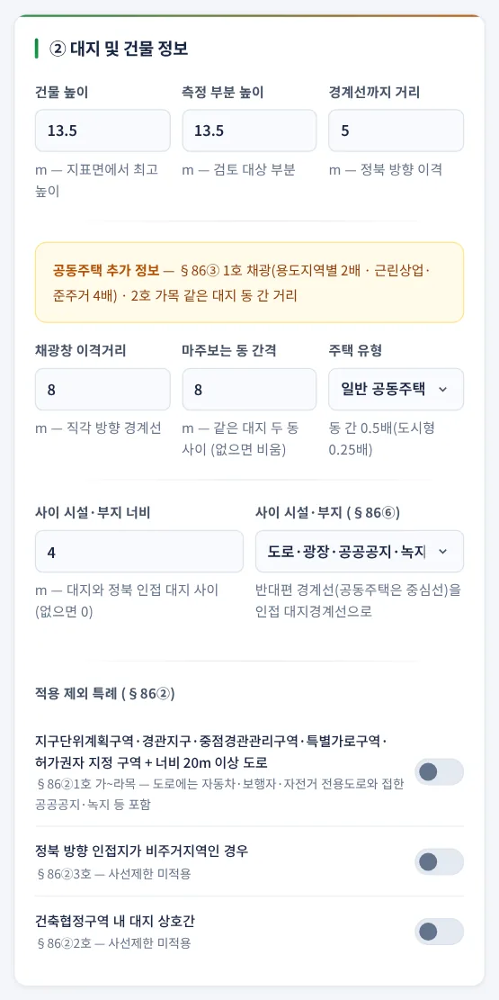
123456789- 1건물 높이
- 2측정 부분 높이
- 3정북 경계선까지 거리
- 4채광창 이격거리
- 5마주보는 동 간격
- 6주택 유형
- 7사이 시설 · 부지 너비
- 8사이 시설 · 부지 종류(§86⑥)
- 9적용 제외 특례 3종(§86②)
| 항목 | 설명 |
|---|---|
| 측정 부분 높이 | 사선을 검토할 건축물 부분의 높이 — 최상단이면 건물 높이와 같게. 10 m 이하면 1.5 m, 넘으면 그 높이의 1/2(개정 기준은 17 m 이하까지 5 m) |
| 경계선까지 거리 | 그 부분에서 정북 방향 인접 대지경계선까지의 수평거리 |
| 채광창 이격거리 | 채광창이 있는 벽면에서 직각 방향 인접 대지경계선까지 — 비우면 채광 검토를 생략합니다 |
| 동 간 간격 · 주택 유형 | 같은 대지 두 동 사이 거리 — 높이 × 0.5(도시형 생활주택 0.25)와 비교. 비우면 생략 |
| 사이 시설 · 부지 | 도로 · 공원 · 하천 · 철도 · 건축 불가 공지 등이 있으면 너비와 종류를 넣습니다. 반대편 경계선(공동주택은 중심선)까지가 계획 이격이 됩니다 |
| 특례 | 켜면 정북 사선을 적용하지 않습니다 — 해당 요건은 4-3 |
3-3. ③ 일영 분석 설정
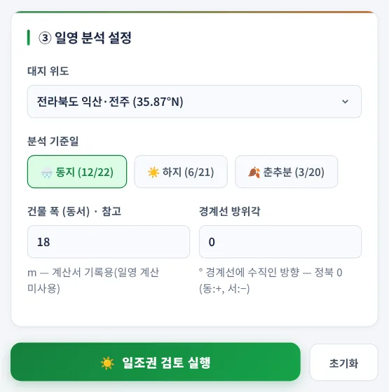
12345- 1대지 위도(지역 선택 · 직접 입력)
- 2분석 기준일
- 3건물 폭(참고)
- 4경계선 방위각
- 5일조권 검토 실행
| 항목 | 설명 |
|---|---|
| 대지 위도 | 지역별 대표 위도 또는 직접 입력(33 ~ 39°N) — 태양 고도 · 방위각 계산에 씁니다 |
| 분석 기준일 | 동지(12/22) · 하지(6/21) · 춘추분(3/20) — 법 기준일은 동지(§86③2호 단서) |
| 건물 폭 | A4 계산서 기록용입니다. 일영 계산에는 쓰지 않습니다 |
| 경계선 방위각 | 정북 경계선에 수직인 방향의 방위각(정북 0 · 동 +, 서 −). 경계선이 정확히 동서로 놓였으면 0 |
3-4. 종합 판정·검토 지표
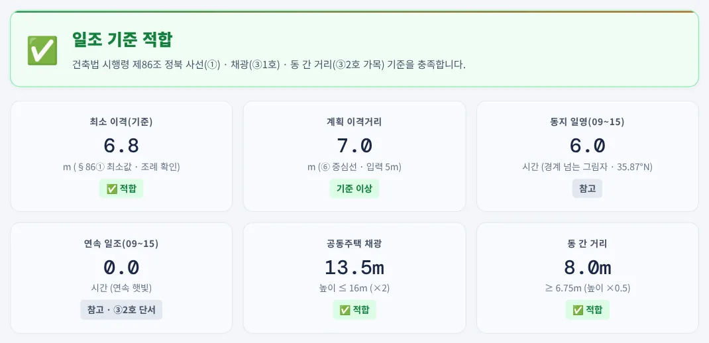
1234567- 1종합 판정(적용된 기준을 함께 표시)
- 2최소 이격(기준) — §86① 최소값(개정 기준은 「법 §61①」)
- 3계획 이격 — ⑥ 적용 시 중심선 · 반대편 경계까지
- 4일영 시간(참고)
- 5연속 일조(참고 · ③2호 단서)
- 6공동주택 채광 — 높이 ≤ 이격 × 배수
- 7동 간 거리 — 높이 × 0.5 이상
| 항목 | 설명 |
|---|---|
| 종합 판정 | 정북 사선 · 채광 · 동 간 거리 가운데 적용되는 기준을 모두 보고, 하나라도 미달이면 「위반」과 미달 항목을 표시합니다. 적용되는 기준이 하나도 없으면 「검토 대상 기준 없음」 |
| 정북 사선 미적용 | 준주거 · 상업 · 공업지역이나 특례를 켠 경우에도 공동주택 채광 · 동 간 거리는 따로 판정합니다(v5.0.6) |
| 참고 지표 | 일영 시간 · 연속 일조는 「참고」 배지 — 판정에 넣지 않습니다 |
3-5. 단면도
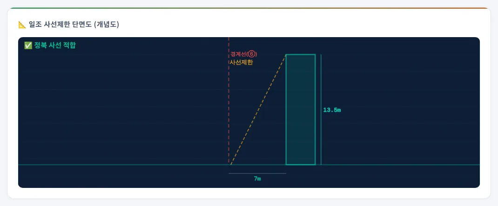
1- 1빨간 점선 경계선(⑥ 적용 시 「경계선(⑥)」) · 노란 점선 사선 · 계획 이격 치수
건물(오른쪽)과 계획 이격 위치의 경계선, 최소 이격에서 시작하는 사선을 같은 축척으로 그립니다. 왼쪽 위 배지는 정북 사선만의 판정입니다(종합 판정은 위의 판정 상자). 두 라벨이 겹칠 만큼 가까우면 「사선제한」이 한 줄 아래로 내려갑니다(v5.0.6).
3-6. 시간대별 일영 분석
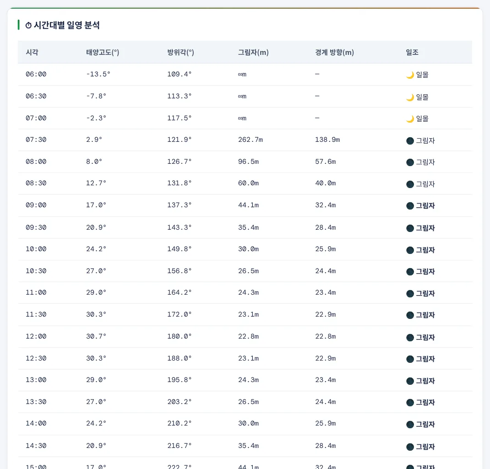
123- 1그림자 길이 L = H ÷ tan(고도)
- 2경계 방향 성분 = −L × cos(태양 방위각 − 경계선 방위각)
- 3일조 여부 — 경계 방향 성분 ≥ 경계까지 거리이면 그림자
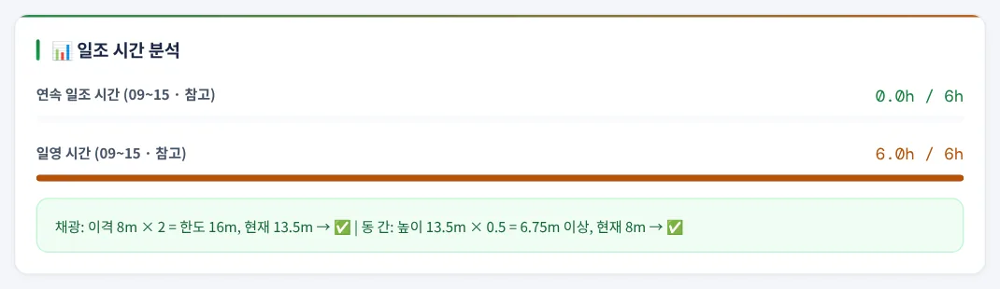
06:00 ~ 18:00을 30분 간격으로 계산합니다. 태양이 고도 1° 이하이면 「일몰」. 그림자 전체 길이가 아니라 경계선에 수직인 방향 성분으로 비교하므로, 아침 · 저녁처럼 그림자가 동서로 길게 눕는 시각을 과대 판정하지 않습니다(v5.0.6). ⑥을 적용하면 사이 시설 너비만큼 먼 반대편 경계선 기준으로 계산합니다.
3-7. 위반 사례 — 정북 사선
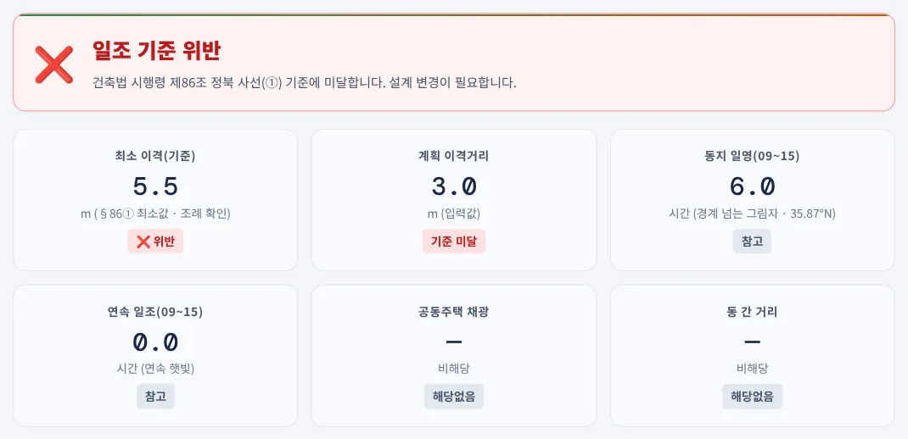
123- 1종합 판정 — 정북 사선 위반
- 2최소 이격 5.5 m
- 3계획 이격 3 m
높이 11 m 부분은 10 m를 넘으므로 높이의 1/2인 5.5 m 이상을 띄어야 합니다. 계획 이격이 3 m라 2.5 m 추가 이격이 필요하다고 법령 근거 칸에 나옵니다. 단독주택이라 채광 · 동 간은 「해당없음」입니다.
3-8. 위반 사례 — 공동주택 채광
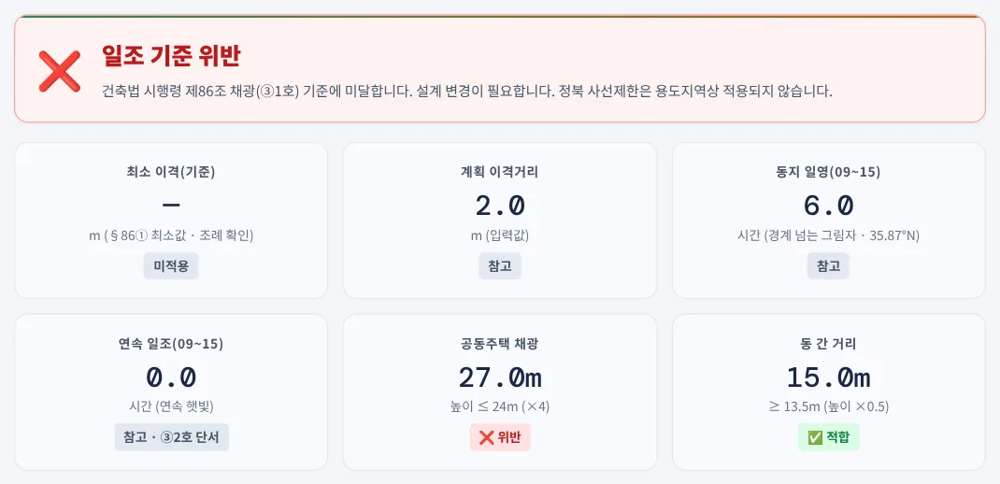
123- 1종합 판정 — 채광 위반 · 정북 사선 미적용
- 2채광 한도 24 m(×4)
- 3동 간 거리 13.5 m 이상 — 적합
준주거지역은 정북 사선이 적용되지 않지만 공동주택 채광은 이격거리의 4배까지입니다. 6 m × 4 = 24 m보다 27 m가 높아 위반입니다. 예전 판은 사선 미적용 지역이면 결과 전체를 「미적용」으로 보여 이 위반이 드러나지 않았습니다(4-10).
3-9. 용어 해설·이용 안내 창
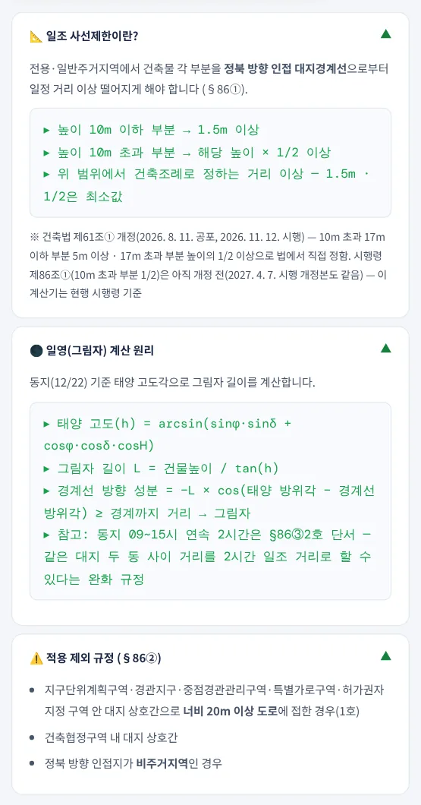
123- 1일조 사선제한이란? · 법 제61조① 개정 안내
- 2일영(그림자) 계산 원리
- 3적용 제외 규정(§86②)
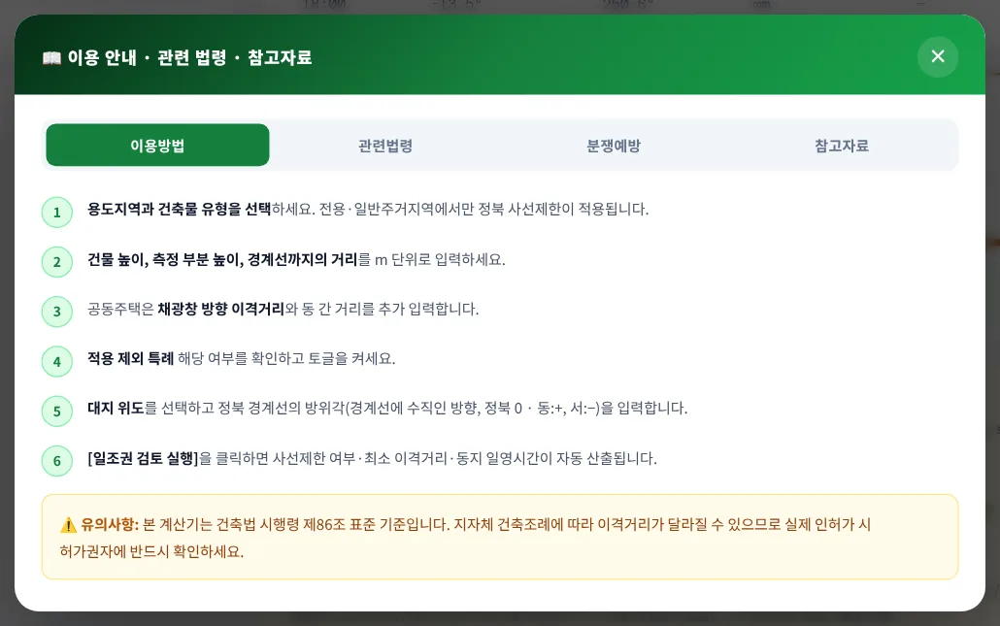
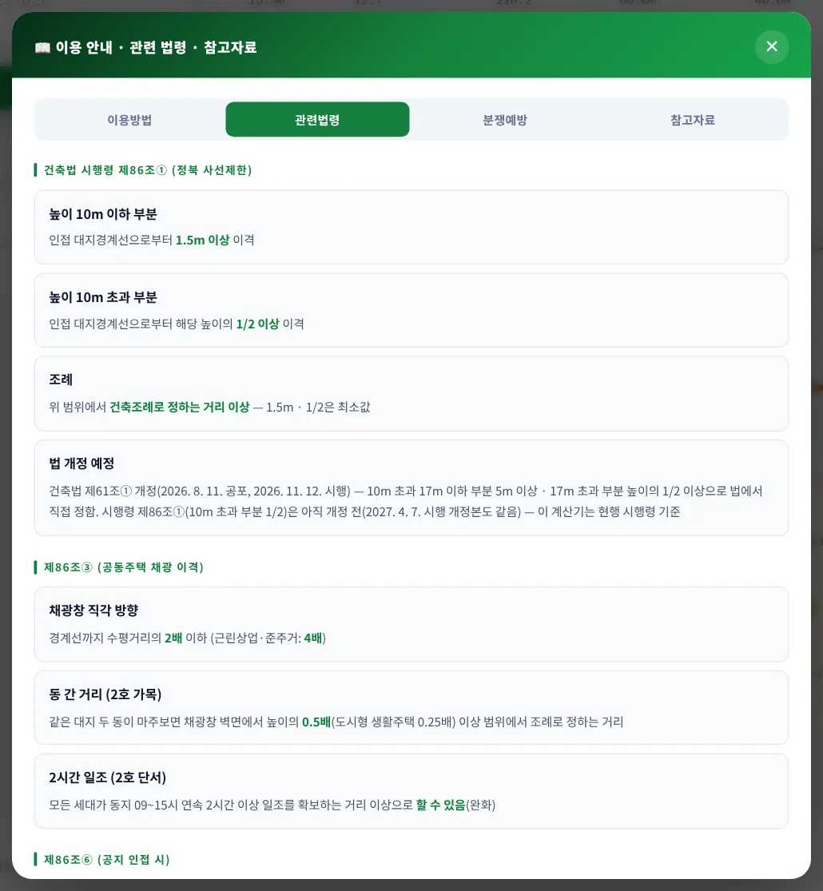
이용 안내 창은 이용방법 · 관련법령 · 분쟁예방 · 참고자료 4개 탭입니다. 관련법령 탭에 정북 사선(현행 · 개정 구간) · 조례 · 적용 시점 · 공동주택 채광 · 동 간 거리 · 2시간 일조(완화) · 이행강제금(건축법 제80조)이 정리되어 있고, 분쟁예방 탭은 건축분쟁전문위원회(국토교통부, 건축법 제88조①) 조정 신청을 안내합니다.
3-10. A4 계산서·출력
- 1인쇄 / PDF 저장
- 2JPG 저장
- 3A4 검토 계산서
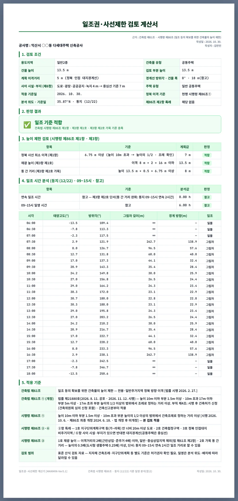
1234- 11. 검토 조건(⑥ · 주택 유형 · 방위각 포함)
- 22. 판정 결과
- 33. 높이 제한 검토 — 정북 사선 · 채광 · 동 간 거리
- 44. 일조 시간 분석(참고) · 시간대별 표
계산서는 검토 조건 · 판정 결과 · 높이 제한 검토 · 일조 시간 분석 · 적용 기준 5개 절입니다. 검토 조건 절에 「적용 기준일」 · 「정북 이격 기준」이 들어가고, 적용 기준 절에는 개정 법 제61조①과 시행령 제86조① 가운데 이번 검토에 쓴 기준에 「본 검토 적용」이 표시됩니다(v5.1.0). 바닥글의 기준일은 선택한 분석 기준일을 따릅니다
3-11. 휴대전화 화면
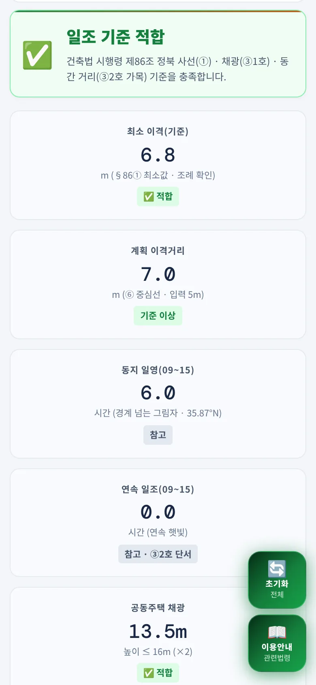
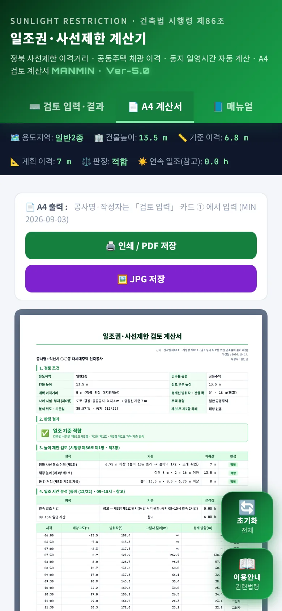
좁은 화면에서는 입력 → 결과가 한 줄로 쌓입니다. 탭 막대는 한 줄이며 「매뉴얼」까지 보입니다. 시간대별 표는 6칸이 한 화면에 들어가도록 칸 여백을 줄입니다.
04법령 해설
4-1. 근거 체계
| 근거 | 내용 |
|---|---|
| 법 제61조① | 전용주거 · 일반주거지역 건축물 높이 — 정북 방향 인접 대지경계선으로부터의 거리에 따라 대통령령으로 정하는 높이 이하 |
| 법 제61조② | 채광창을 인접 대지경계선 방향으로 두거나 한 대지에 두 동 이상 짓는 공동주택(일반상업 · 중심상업지역 제외) — 대통령령으로 정하는 높이 이하 |
| 법 제61조① (개정) | 법률 제21880호(2026. 11. 12. 시행) — 정북 이격을 법에서 직접: 10 m 이하 1.5 m · 10 m 초과 17 m 이하 5 m · 17 m 초과 높이의 1/2 이상의 범위에서 조례로 정하는 거리 이상. 단서 — 정북 인접 대지가 주거지역이 아닌 경우 등 대통령령으로 정하는 경우 제외 |
| 시행령 제86조① | 정북 이격 — 높이 10 m 이하 부분 1.5 m 이상, 10 m 초과 부분 높이의 1/2 이상의 범위에서 건축조례로 정하는 거리 이상(법 개정 후 아직 미개정) |
| 시행령 제86조② | ①항 적용 제외 3호(특례) |
| 시행령 제86조③ | 공동주택 — 1호 채광 높이, 2호 같은 대지 동 간 거리(가 ~ 마목 · 단서 2시간 일조), 3호 도로를 사이에 둔 주택단지 |
| 시행령 제86조⑥ | 대지 사이 시설 · 부지가 있으면 반대편 대지경계선(공동주택은 중심선)을 인접 대지경계선으로 |
| 법 제80조 · 제88조 | 이행강제금 · 건축분쟁전문위원회(국토교통부) 조정 |
건축법 제61조(2026. 2. 27. 시행 · 제1항 개정 법률 제21880호 2026. 11. 12. 시행) · 건축법 시행령 제86조(2026. 10. 6. 시행본 · 제86조 최종 개정 2024. 6. 18.) — LawMCP 원문 대조 2026-10-30
4-2. 정북 사선 (§86①)
4-3. 적용 제외 (§86②)
| 호 | 요건 |
|---|---|
| 1호 | 지구단위계획구역 · 경관지구(가목), 중점경관관리구역(나목), 특별가로구역(다목), 허가권자 지정 · 공고 구역(라목) 안의 대지 상호간으로 해당 대지가 너비 20 m 이상 도로(자동차 · 보행자 · 자전거 전용도로 포함, 도로에 접한 공공공지 · 녹지 · 광장 등 포함)에 접한 경우 |
| 2호 | 건축협정구역 안 대지 상호간 — 건축협정에 일정 거리 이상 띄우는 내용이 포함된 경우만 |
| 3호 | 정북 방향 인접 대지가 전용주거 · 일반주거지역이 아닌 용도지역 |
4-4. 사이 시설·부지 (§86⑥)
| 구분 | 내용 |
|---|---|
| 1호 시설 | 공원(허가권자가 일조 확보가 필요하다고 인정한 도시공원 제외) · 도로 · 철도 · 하천 · 광장 · 공공공지 · 녹지 · 유수지 · 자동차 전용도로 · 유원지 |
| 2호 대지 | 건축물이 없는 대지로 너비 2 m 이하이거나 분할제한 기준(제80조) 이하인 대지 |
| 3호 | 그 밖에 건축이 허용되지 않는 공지 |
| 적용 | 반대편 대지경계선 — 공동주택은 인접 대지경계선과 반대편 경계선의 중심선 |
공원은 제외 공원이 있어 앱 선택지에 「공원」으로만 두었습니다. 제외 공원에 해당하는지는 허가권자에게 확인하십시오. 하나의 대지 사이에 시설이 있는 공동주택의 심의 특례(⑦)는 계산하지 않습니다.
4-5. 공동주택 채광 (§86③1호)
③항 단서 — 채광창 벽면에서 인접 대지경계선까지 1 m 이상으로서 건축조례로 정하는 거리 이상인 다세대주택은 1호를 적용하지 않습니다. 앱은 이 단서를 자동 판정하지 않으니 해당하면 채광 결과를 참고로만 보십시오.
4-6. 동 간 거리 (§86③2호)
| 구분 | 내용 |
|---|---|
| 단서(완화) | 그 대지의 모든 세대가 동지 09 ~ 15시에 2시간 이상 연속 일조를 확보할 수 있는 거리 이상으로 할 수 있다 — 의무 기준이 아니라 가목 등을 대신하는 완화 규정입니다 |
| 나 ~ 마목 | 높은 건물 주된 개구부가 낮은 건물을 향하는 경우(10 m 이상 · 낮은 건물 0.5배), 부대 · 복리시설(1배), 채광창 없는 벽면과 측벽(8 m), 측벽과 측벽(4 m) — 앱은 가목만 판정합니다 |
| 3호 | 주택단지 두 동이 도로를 사이에 두면 2호 가 ~ 다목 대신 도로 중심선을 인접 대지경계선으로 보아 1호 적용 |
4-7. 일영 계산
일영 · 연속 일조 시간은 09:00 ~ 15:00을 30분 구간 12개로 나누고 각 구간 시작 시각의 상태로 셉니다(최대 6 h). 결과는 건물 높이의 그림자 끝이 인접 대지경계선(한 점)을 넘는지를 본 개념 계산입니다. 건물 폭 · 평면 형태 · 주변 건물 · 지형은 반영하지 않으므로, 단서(2시간 일조)로 동 간 거리를 정하려면 별도 일조 시뮬레이션으로 확인하십시오. 예제 A는 동지 정오에도 고도 30.7°라 그림자가 약 22.8 m로 경계(7 m)를 넘어 연속 일조가 0 h입니다.
4-8. 계산 범위·한계
| 항목 | 내용 |
|---|---|
| 판정하는 것 | §86① 정북 사선(측정 부분 1개), §86② 특례 3종, §86⑥ 사이 시설 · 부지, §86③1호 채광 높이, §86③2호 가목 동 간 거리 |
| 판정하지 않는 것 | 건축조례 거리, 법 제61조③ 정남 방향 특례 지구, 법 제61조④ 2층 이하 8 m 이하 조례 특례, §86③ 단서(다세대 1 m 이상), 2호 나 ~ 마목 · 3호, §86⑦ 심의 특례, 부분별 다단 사선 |
| 참고값 | 일영 시간 · 연속 일조(개념 계산), 건물 폭 |
4-9. 법 제61조① 개정 — 적용 기준일
| 높이 부분 | 현행(2026. 11. 11.까지 신청) | 개정(2026. 11. 12.부터 신청) | 비고 |
|---|---|---|---|
| 높이 10 m 이하 부분 | 1.5 m 이상 | 1.5 m 이상 | 같음 |
| 10 m 초과 17 m 이하 | 높이의 1/2 이상(5 ~ 8.5 m) | 5 m 이상 | 완화(17 m에서 3.5 m 줄어듦) |
| 17 m 초과 부분 | 높이의 1/2 이상 | 높이의 1/2 이상 | 같음 |
| 근거 | 시행령 제86조① | 건축법 제61조①(법률 제21880호) | — |
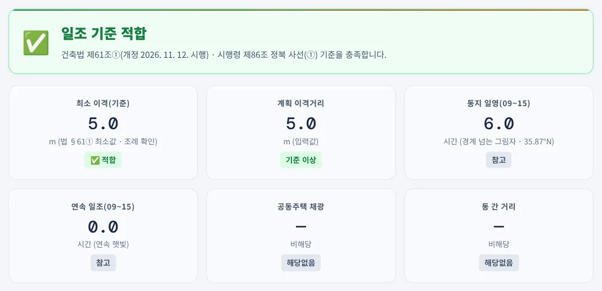
123- 1종합 판정 — 개정 기준 적합
- 2최소 이격 5 m (법 §61①)
- 3계획 이격 5 m
같은 건축물을 적용 기준일 2026. 11. 11. 이전으로 두면 높이의 1/2인 7 m가 필요해 2 m가 부족한 「위반」이고, 2026. 11. 12. 이후 신청이면 개정 법 제61조①의 5 m 이상으로 「적합」입니다. 시행령 제86조①은 법 개정 후에도 아직 개정되지 않았으므로(2027. 4. 7. 시행 예정 개정본도 제86조는 그대로), 개정 기준 계산은 상위법인 법 제61조①의 구간 기준을 따릅니다. 판정문 · 법령 근거 · A4 계산서의 「적용 기준일」 · 「정북 이격 기준」 행에 어떤 기준으로 계산했는지 표시됩니다.
4-10. v5.0.6 판정·근거 정정 (2026-10-14)
| 항목 | 기존 | 정정 |
|---|---|---|
| 2시간 연속 일조 | 공동주택 판정 의무 기준 | ③2호 단서(완화) — 참고 표시 |
| 사선 미적용 지역 | 결과 전체 「미적용」 | 채광 · 동 간 거리 따로 판정 · 종합 |
| 채광 배수 | 「근준」 선택 시만 4배 | 용도지역으로 자동(근린상업 · 준주거 4배 · 일반 · 중심상업 제외) |
| 용도지역 | 일반 · 중심 · 유통상업 한 항목 | 일반 · 중심상업 / 유통상업 분리 |
| 일영 판정 | 그림자 전체 길이 ≥ 경계 거리 | 경계선 수직 성분 ≥ 경계 거리 · 표에 「경계 방향」 열 |
| 동 간 거리 | 입력만 받고 미사용 | ③2호 가목 0.5배(도시형 0.25배) 판정 |
| 사이 시설 · 부지 | 입력만 받고 미사용 | §86⑥ 반대편 경계(공동주택 중심선) |
| 방위각 | 미사용 | 경계선 방위각으로 일영에 반영 |
| 일영 · 연속 일조 시간 | 09:00 · 15:00 양 끝 포함 13개 표본 — 최대 6.5 h(「6.5h / 6h」) | 30분 구간 12개 — 최대 6 h |
| 이행강제금 근거 | §115조의2④ | 건축법 제80조 |
| 건축분쟁전문위원회 | 시 · 도 설치 | 국토교통부 설치(제88조①) |
| 시행일 표기 | 시행령 시행 2026. 7. 28. | 2026. 10. 6. · 제86조 최종 개정 2024. 6. 18. |
| 조례 · 법 개정 | 없음 | 조례 최소값 안내 · 법 제61조① 개정(2026. 11. 12.) 안내 |
예전 판으로 만든 계산서는 다시 검토하십시오. 특히 준주거 · 근린상업 · 공업지역 공동주택, 사이에 도로 · 공원이 있는 대지, 2시간 일조 미달로 「위반」이 나왔던 공동주택은 판정이 달라질 수 있습니다.
05실무 작업 방법
5-1. 단계별 절차
| 단계 | 내용 |
|---|---|
| ① 기본 조건 | 토지이용계획확인서로 용도지역 · 지구단위계획 · 경관지구를 확인하고, 정북 인접 대지의 용도지역을 봅니다(특례 3호) |
| ② 조례 | 해당 지자체 건축조례의 정북 이격 거리 · 공동주택 채광 · 동 간 거리를 확인합니다 — 최소값보다 크면 그 값으로 계획 |
| ③ 입력 · 판정 | 사선이 가장 불리한 부분(최상단 · 계단실 · 옥탑)마다 측정 높이와 거리를 넣어 판정합니다 |
| ④ 공동주택 | 채광창 방향별 이격거리와 동 간 거리를 넣어 채광 · 동 간 판정을 함께 봅니다 |
| ⑤ 출력 | A4 계산서를 PDF로 남겨 허가 도서 · 검토서에 붙입니다 |
5-2. 허가 신청 전 확인
| 항목 | 확인 |
|---|---|
| 조례 거리 | 1.5 m · 1/2보다 큰 조례 거리 — 계산기는 최소값 기준 |
| 측정 부분 | 옥탑 · 계단실 · 파라펫 등 높이 산정에 들어가는 부분을 빠짐없이 검토 |
| 사이 시설 | 도로 · 공원 너비는 지적도 기준, 제외 공원 해당 여부는 허가권자 확인 |
| 공동주택 | ③항 단서(다세대 1 m 이상) · 2호 나 ~ 마목 해당 여부, 도시형 생활주택 여부 |
| 적용 기준일 | 허가 신청일(건축위원회 심의 신청일 포함) · 건축신고일을 정확히 넣었는지 — 2026. 11. 12. 전후로 10 ~ 17 m 부분 기준이 달라집니다(4-9) |
06문제 해결·FAQ
| 증상 | 해결 |
|---|---|
| 결과가 나오지 않아요 | 용도지역 · 건축물 유형 · 건물 높이 · 측정 높이 · 경계 거리를 모두 넣어야 합니다. 측정 높이가 건물 높이보다 크면 안내가 나옵니다 |
| 「검토 대상 기준 없음」 | 정북 사선이 적용되지 않는 지역(또는 특례)이고 공동주택 채광 · 동 간 입력도 없을 때입니다 |
| 준주거인데 「위반」이 나와요 | 정북 사선은 미적용이지만 공동주택 채광(4배)이 미달입니다(3-8) |
| 계획 이격이 입력값과 달라요 | 사이 시설 · 부지를 넣으면 §86⑥에 따라 반대편 경계(공동주택은 중심선)까지로 바뀝니다(4-4) |
| 연속 일조가 0 h예요 | 인접 대지경계선 한 점의 참고값입니다. 판정에는 들어가지 않습니다(4-7) |
| 예전에는 2시간 미달로 위반이었어요 | 2시간 일조는 동 간 거리 완화 규정(③2호 단서)이라 v5.0.6부터 참고로 표시합니다 |
| 같은 입력인데 최소 이격이 달라요 | 적용 기준일이 다릅니다 — 2026. 11. 12. 이후면 10 m 초과 17 m 이하 부분이 5 m입니다(4-9) |
| 조례 거리로 판정하고 싶어요 | 조례 거리를 최소 이격과 비교해 직접 확인하십시오. 계산기의 최소 이격은 시행령 최소값입니다 |
| 화면이 예전 판이에요 | 새로 고침(Ctrl+F5) 또는 앱을 닫았다 다시 여십시오 |
부록
A1. 예제 입력값
| 예제 | 입력 |
|---|---|
| 예제 A | 제2종 일반주거 · 공동주택 · 높이 13.5 m · 측정 13.5 m · 경계 5.0 m · 채광 이격 8 m · 동 간 8 m · 일반 공동주택 · 사이 도로 4 m · 특례 없음 · 35.87°N · 동지 · 방위각 0° |
| 예제 B | 제1종 일반주거 · 단독주택 · 높이 11 m · 측정 11 m · 경계 3.0 m · 35.87°N · 동지 |
| 예제 C | 준주거 · 공동주택 · 높이 27 m · 측정 27 m · 경계 2.0 m · 채광 이격 6 m · 동 간 15 m · 35.87°N · 동지 |
| 예제 D | 제2종 일반주거 · 단독주택 · 높이 14 m · 측정 14 m · 경계 5.0 m · 적용 기준일 2026. 11. 12. · 35.87°N · 동지 (예제 A · B · C의 적용 기준일은 2026. 10. 30.) |
A2. 예제 결과
| 예제 | 정북 사선(최소/계획) | 채광 | 동 간 거리 | 종합 |
|---|---|---|---|---|
| 예제 A | 6.75 / 7 m 적합 | ≤ 16 m 적합 | ≥ 6.75 m 적합 | 적합 |
| 예제 B | 5.5 / 3 m 위반 | 해당 없음 | 해당 없음 | 위반(정북 사선) |
| 예제 C | 미적용 | ≤ 24 m 위반 | ≥ 13.5 m 적합 | 위반(채광) |
| 예제 D | 5 / 5 m 적합(개정 기준) | 해당 없음 | 해당 없음 | 적합 |
A3. 버전 변경 내역
| 버전 | 내용 |
|---|---|
| Ver-5.1 · v5.1.0 (2026-10-30) | 건축법 제61조① 개정(법률 제21880호, 2026. 11. 12. 시행) 반영 — 「적용 기준일」 입력, 기준일에 따라 현행(시행령 §86①) · 개정(법 §61① 10 m 초과 17 m 이하 5 m) 자동 선택, 판정문 · 법령 근거 · A4 계산서 기준 표시, 이용안내 관련법령 탭 개정(4-9) |
| Ver-5.0 · v5.0.6 (2026-10-14) | 판정 로직 정정(채광 · 동 간 · ⑥ · 경계 방향 일영 · 2시간 참고화 · 일영 시간 구간 계산), 근거 표기 정정, 법 제61조① 개정 안내, 단면도 라벨 겹침 · A4 바닥글 기준일, 사용자 매뉴얼 연결(4-10) |
| Ver-5.0 · v5.0.5 (2026-09) | A4 표 선 · 고정폭 글꼴 정리, 오프라인 캐시 갱신 |
| Ver-5.0 (2026-09) | 디자인 통일(헤더 · 탭 막대 · 요약 스트립), A4 계산서 · JPG 저장 |
A4. 용어
| 용어 | 뜻 |
|---|---|
| 정북 사선제한 | 주거지역 건축물 각 부분을 정북 방향 인접 대지경계선에서 높이에 따라 띄우게 하는 제한(법 §61① · 영 §86①) |
| 적용 기준일 | 건축허가 신청일(건축위원회 심의 신청일 포함) 또는 건축신고일 — 개정 법 제61조① 적용 여부를 가르는 날짜(부칙 제4조) |
| 측정 부분 높이 | 사선을 검토하는 건축물 부분의 지표면으로부터 높이 |
| 채광 높이 제한 | 공동주택 각 부분 높이를 채광창 벽면 → 인접 대지경계선 거리의 2배(4배) 이하로 하는 제한(§86③1호) |
| 동 간 거리 | 같은 대지에서 마주보는 두 동 사이의 거리(§86③2호) |
| 일영 | 건축물이 만드는 그림자. 동지에 가장 길다 |
| 경계선 방위각 | 정북 경계선에 수직인 방향의 방위각 — 정북 0, 동쪽 +, 서쪽 − |